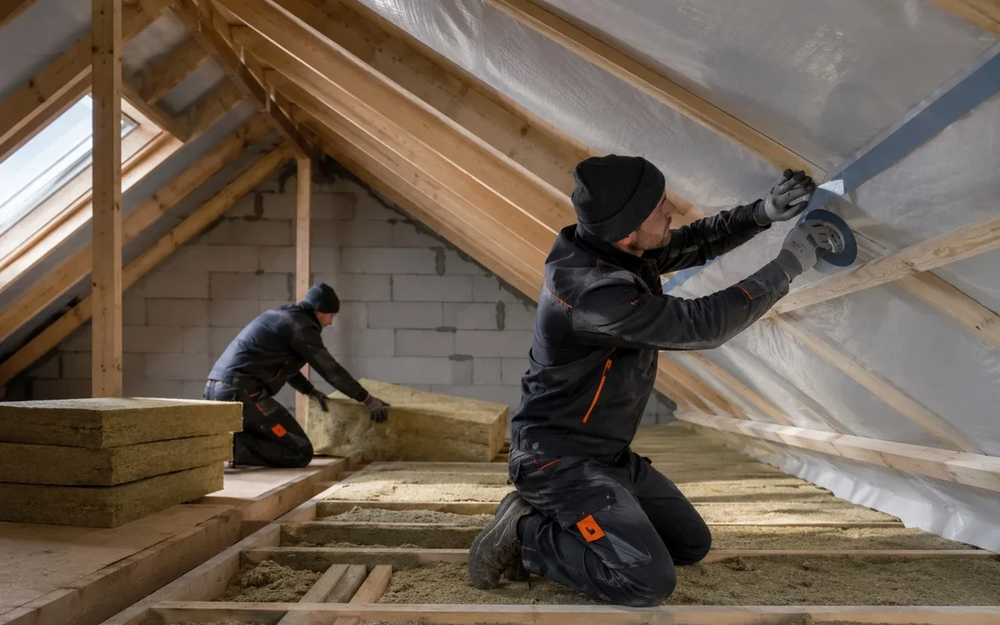

Що варто підготувати перед роботою на даху: доступ до об’єкта, місце для матеріалів, безпечні проходи і огляд конструкцій.
З чого почати
Підготовка будинку до монтажу покрівлі починається з огляду конструкції, а не з вибору окремого матеріалу. Важливо оцінити ухил, стан основи, напрям руху води, карнизні зони, проходи через дах і доступ до місця робіт. Таке обстеження допомагає зрозуміти, які рішення будуть доречними саме для цього об’єкта.
Що перевіряють на об’єкті
Покрівлю оцінюють як єдину конструкцію. Крім покриття перевіряють обрешітку, мембрани, утеплення, вентиляційні зазори, коник, ендови, примикання та водостік. Помилка в одному вузлі часто впливає на сусідні ділянки.
- форма і ухил даху
- стан деревини та основи
- вентиляція і захист від вологи
- примикання, карнизи і коник
- водовідведення і доступ для обслуговування
Які рішення застосовують
Рішення підбирають під тип будівлі, геометрію даху і режим експлуатації. Для приватного будинку часто важливі тиша, акуратний вигляд і стабільна робота підпокрівельного простору. Для господарських або комерційних об’єктів більше значення мають довжина скатів, кріплення, доступ до обладнання і водовідведення.
Помилки, яких краще уникати
Поширена помилка полягає у виборі покриття без перевірки основи та вузлів. Покрівля працює як система: основа, захист від вологи, вентиляція, кріплення та примикання мають бути узгоджені.
Що підготувати перед роботами
Для первинної оцінки потрібні фотографії даху з кількох сторін, доступ до горища або технічного простору та відомості про попередні роботи. Карнизи й водостоки також варто оглянути.
Поширені запитання
Чи можна прийняти рішення тільки за фото?
За фотографіями можна оцінити геометрію та видимі пошкодження. Стан основи й прихованих вузлів перевіряють на об’єкті.
Що важливіше, матеріал чи монтаж?
Навіть відповідне покриття потребує правильної основи, вентиляції та акуратно виконаних вузлів.